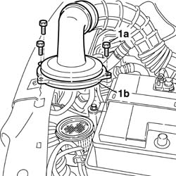
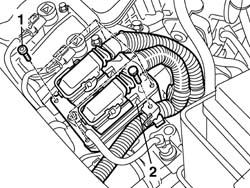
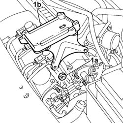
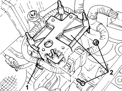

1056B87 ignition/injection system control unit mount - r r
- Path
- Procedures > 10 ENGINE > 1056 PETROL INJECTION SYSTEM > 1056B MULTI-POINT INJECTION SYSTEM (MPI) > 1056B87 ignition/injection system control unit mount - r r
- Kind
- repair procedure (removal / refitting; the operation number is the code)
- Applies to
- engines: 1.4 8v, 1.6 16v; all production periods
- Interactive page
- https://sloeber94.github.io/elrnDB-fDbl/en/#/2584360
Applies to: engines: 1.6 16v; all production periods
 Removing
Removing
 Refitting
RefittingDisconnect the negative battery lead.
1. Unscrew bolts (1a) securing air filter case cover (1b), then place the cover with air intake sleeve to one side out of the working area.

Applies to: engines: 1.6 16v; all production periods
1. Unscrew the bolts securing the injection/ignition control unit to the bracket.
2. Disconnect the retaining collars, then move the injection/ignition control unit aside without disconnecting the electrical connections.

Applies to: engines: 1.6 16v; all production periods
1. Undo the nuts (1a) and remove the mount (1b) of the injection/ignition system control unit.

Applies to: engines: 1.6 16v; all production periods
Refitting
RemovingPosition the injection/ignition control unit mount and secure with nuts.
Position the injection/ignition control unit and secure to the mount with nuts.
Connect the cable retaining bands.
Position the engine air intake hose and the air filter casing cover and secure it using the bolts.
Connect the negative battery lead.
Applies to: engines: 1.4 8v; all production periods
Removing
RefittingOp. 1056B82 INJECTION/IGNITION SYSTEM E.C.U. (ONE) - R + R
1. Release the wiring from the fastenings on the central injection/ignition mount.
2. Undo bolts, nut and remove the injection/ignition control unit mount.

Applies to: engines: 1.4 8v; all production periods
Refitting
Removing- Refit the injection/ignition control unit mount in its seat and secure with the bolts and nut.
- Fasten the wiring to the central injection/ignition mount.
Topics linked from this page (1)
Topics that link to this page (23)
- 1016A20 single cam cover - r + r and replace gasket
- 1016B20 lh cylinder head extension - replace gasket
- 1016B24 rh cylinder head extension - replace gasket
- 1016C10 cylinder head - r + r and replace gasket
- 1020D12 front crank shaft oil seal cover - r + r and replace seals
- 1020D14 front crank shaft oil seal cover - r + r and replace seals for versions with oil pump on crank shaft, timing side
- 1020D18 front crank shaft cover oil seal - replace
- 1032B10 toothed timing belt - r + r for timing adjustment or replacement
- 1032B14 toothed timing belt - r + r for timing adjustment or replacement versions with air conditioner
- 1032B46 toothed drive pulley - r + r
- 1032B52 toothed driven pulley (one) - r + r
- 1032B60 bolt pulley - r r
- 1032B62 TIMING BELT TOOTHED PULLEY - R.R. FOR VERSIONS WITH AIR CONDITIONING
- 1032C18 mobile timing system tensioner - r + r for 24 valve engines
- 1032D34 timing system guard assemblies - r + r
- 1036B10 overhead camshaft - r r on vehicle
- 1036G10 camshaft controlling exhaust valves in top head - r + r with top head removed - includes replacement of top head
- 1036G20 camshaft controlling intake valves in top head - r + r with top head removed - includes replacement of top head if necessary
- 1036G48 rear seal of camshaft of one l/h or r/h top head - r + r and replace seal
- 1036C39 PHASE TRANSFORMER ON INLET CAMSHAFT IN CYLINDER HEAD - R.R.
- 1036H14 valve tappets - check clearance
- 1036H18 VALVE TAPPETS - Adjust. following clearance check
- 1088C10 water pump - r + r